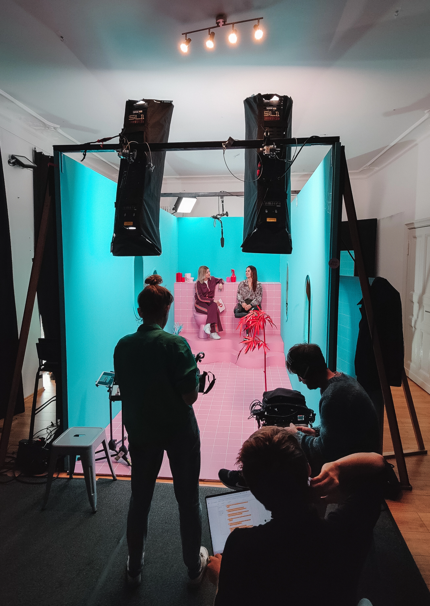
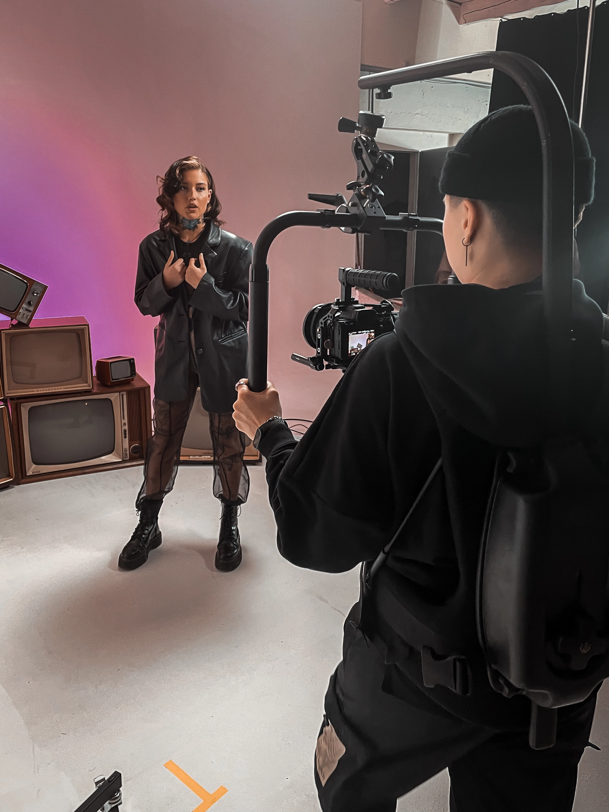
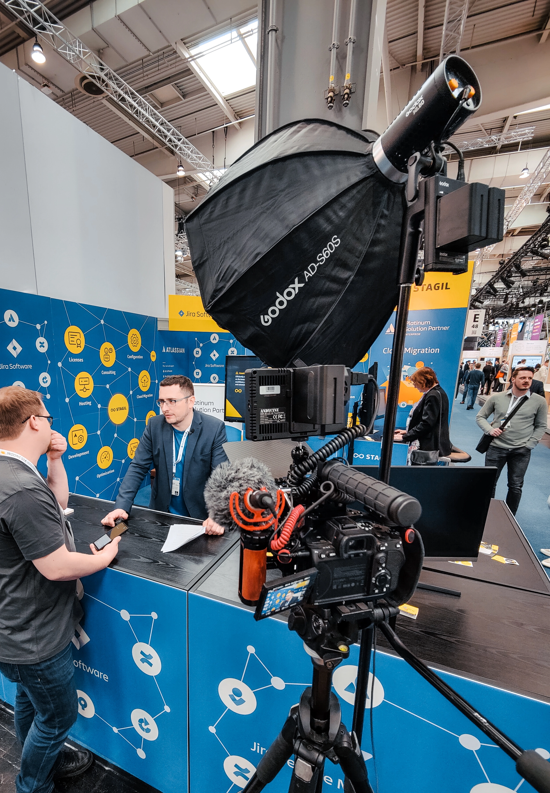
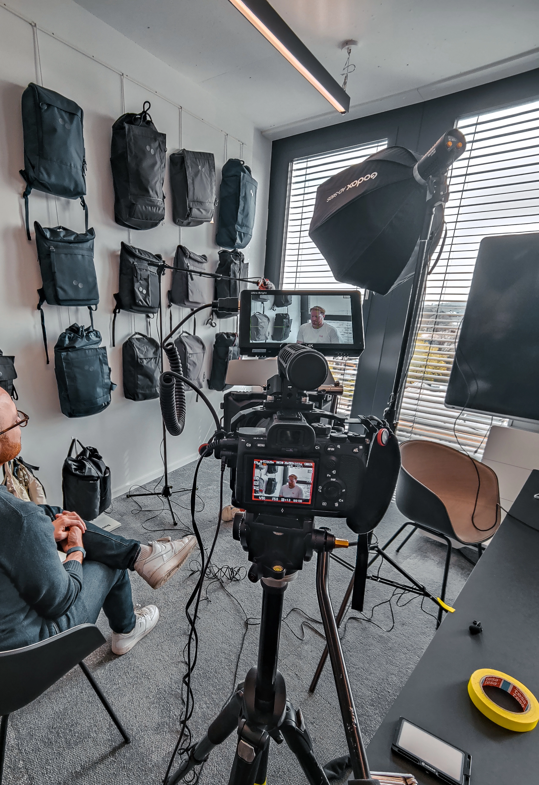

Not a factory. A dedicated partner for teams who treat video as a medium for meaning — not just output.




Motion Design
Motion Design
Video Production
Video Production
I believe in depth over volume. My focus is strictly on projects that demand aesthetic precision and conceptual rigor.
By operating on an "aligned projects only" basis, I ensure every frame, transition, and keyframe receives obsessive attention. I am not a factory; I am a dedicated partner for brands that view video not as content, but as cinema.
If your project requires a tailored, high-fidelity approach—where design thinking meets technical execution—we are likely a match.